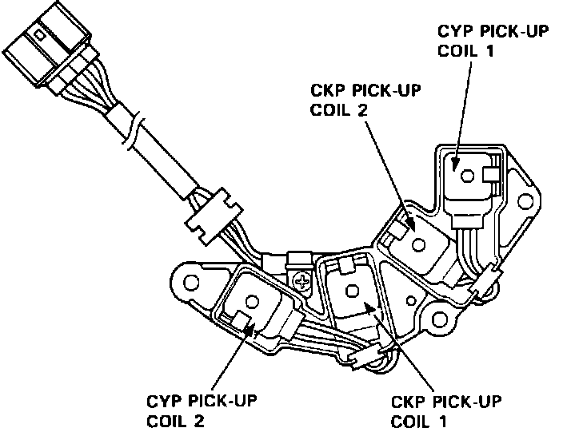

Crankshaft Position Sensor: Description and Operation
CKP/CYP Position Sensor:

PURPOSE
The CRANK (CKP) sensor determines timing for fuel injection and ignition of each cylinder and detects engine RPM. The CYLINDER (CYP) sensor detects the position of No. 1 cylinder for sequential fuel injection to each cylinder.
LOCATION
The CKP/CYP sensor is bolted behind the cam sprocket on the left cylinder head.
CONSTRUCTION
The unit consists of two separate sensors. Both sensors use a pickup coil and rotor to generate a low voltage signal to the ECM.
OPERATION
The CYP signal is used to determine ignition timing at start-up and if the CKP signal becomes abnormal. It also, determines the position of cylinder No. 1 for sequential fuel injection to each cylinder and ignition timing. The CKP sensor is used to determine ignition and fuel injection timing while the engine is running. It's signal is also used by the ECM to determine engine rpm.